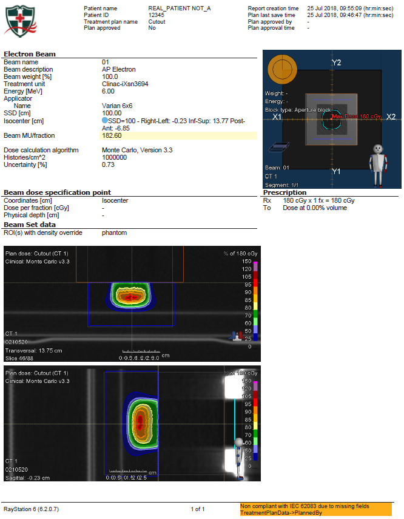

e- Blk w/TomoHDA & Ray6
2018_07_25
At Tomo
-
Pre-Start: cut & pour block, power up, run software, 5-min warmup, AIRSCANS
-
Select Patient: ‘STEREOPHAN, IMAGING’, [ fine pitch, 1mm slices ]
-
Select slices → Accept slices … Prepare scan → OK → Setup → Yes
+/- cm scan 6x6 10x6 10x10 15x15 20x20 25x25 4 4 6 9 12 14 -
Setup electron block, green lasers at insert center-exit

Figure 1
-
Main → Ready → Yes … Key → Image → Key → check image for voids
-
Tools → Clear selected patient → Tools → Dicom Options → Export Items
-
Export to: RaySearch … select correct ‘CTrue Image’ → Send Now → Close
At RayStation
-
Patient Data / Patient Information
- Import new patient → [ ‘Storage SCP’, ‘STEREOPHAN, IMAGING’, ‘CT Series’]
- ‘Import’ → if prompted, ‘Create a new patient’ then ‘OK’
- Edit patient data → [Patient ID, First name, Last name] → ‘OK’ → ‘Yes’
- Image Sets / Properties → confirm correct density table → ‘OK’
-
Patient Modeling / Structure Definition / ROI Tools
-
Set Coronal view, all axes on block center → Rt-click, Preset, Inner ear
-
New ROI geometry / Create new ROI… [Name: aperture, Type:PTV] → ‘OK’
Outline block opening w/Spline tool → Set Transversal view
-
New ROI geometry / Basic shapes / Create box ROI…
[ R-L/I-S/P-A = 10/10/5, Center: Geometric Center of ROI: aperture, Output / New ROI / Name: air_gap, Type: undefined] → ‘OK’
-
New ROI geometry / Basic shapes / Create box ROI…
[ R-L/I-S/P-A from below, Center: Geometric Center of ROI: aperture, Output / New ROI / Name: phantom, Type: undefined] → ‘OK’
6x6 10x6 10x10 15x15 20x20 25x25 6E 8,8, 4 12,12, 4 12,12, 4 17,17, 4 22,22, 4 27,27, 4 9E 8,8, 6 12,12, 6 12,12, 6 17,17, 6 22,22, 6 27,27, 6 12E 8,8, 8 12,12, 8 12,12, 8 17,17, 8 22,22, 8 27,27, 8 16E 8,8,10 12,12,10 12,12,10 17,17,10 22,22,10 27,27,10 20E 8,8,12 12,12,12 12,12,12 17,17,12 22,22,12 27,27,12 -
Translate: ‘air_gap’ to bottom of block, ‘phantom’ to bottom of ‘air_gap’
-
-
Plan Design / Plan Setup
-
New plan+ → Do you want to save the changes? → ‘Yes’
[Name: Cutout, Planned by: you, Patient Treatment position: HFS, Modality: Electrons, Treatment Technique: Applicator and cutout, Treatment machine: Clinac-iXsn3694, Create setup beams: No, Dose prescription: 180 cGy x 1fx, ROI / phantom, Prescription type: Dose at volume%: 0, Auto scale:Yes] → ‘OK’
Grid Settings
[ Resolution: 0.10, Use Uniform Resolution:Yes, Set default size ] → OK In planning windows, Rt-click, Edit dose grid, adjust to include aperture
-
Beams / Add
[ Name: 01, Description: AP Electron, MeV: 6, Isocenter Name: SSD=100, Isocenter Location: “Center of ROI: phantom”, copy position, Angles:180/180/180, Applicator: Varian 6x6, Cutout name: cutout, Cerrobend, 1.7 cm] → ‘OK’
Overwrite “SSD [cm] To surface” to 100
Setup Beams → Delete, Delete, Delete (if present)
-
-
Plan Design / Electron Beam Design / Treat and Protect
Treat=aperture, Protect=’‘, Margins= 0,0,0,0 → ‘Conform all beams’ Settings / Number of histories per cm2 = 1,000,000 → ‘OK’
Final dose → long wait →

Figure 2
Ctrl-P → ‘Yes’, ‘Yes’, ‘Yes’ → Template: ‘Electron - Clinical Sim’
Figure 3